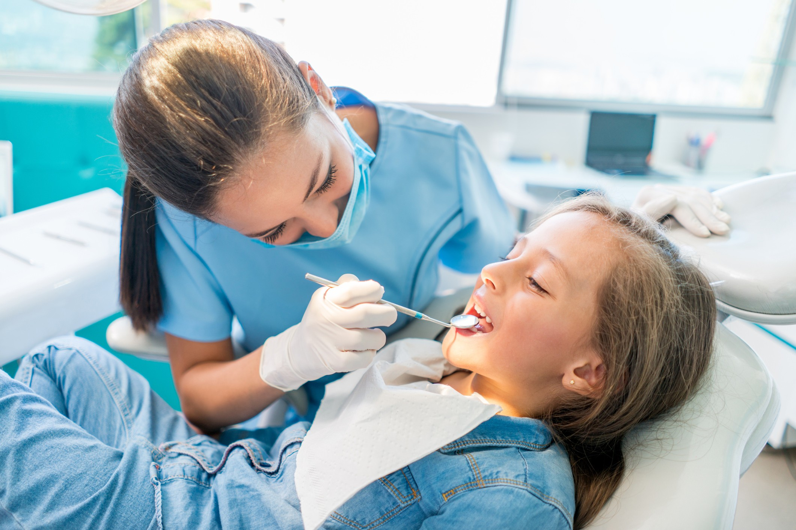

✨Área da saúde humana que estuda e trata do sistema estomatognático - compreende o crânio, a face, pescoço e cavidade bucal, abrangendo ossos, musculatura mastigatória, articulações, dentes e tecidos.
✨No Brasil, a Odontologia configura-se como especialidade médica autônoma, desta forma o médico cirurgião dentista detém de todas as prerrogativas médicas inerentes ao exercício profissional.✨QUAIS SÃO AS ÁREAS DA ODONTOLOGIA? Traumatologia Buco-Maxilo-Facial. Dentística. Disfunção Temporomandibular e Dor Orofacial. Endodontia. Estomatologia. Radiologia Odontológica e Imaginologia. Implantodontia. Odontogeriatria.
✨E VANTAJOSO FAZER ODONTOLOGIA? Além de ser uma profissão essencial para a saúde e o bem-estar das pessoas, o curso de Odontologia oferece uma gama diversificada de oportunidades no mercado de trabalho.
✨O primeiro médico dedicado à Odontologia foi o francês Pierre Fauchard. Em 1723 ele lançou a obra “O Cirurgião Dentista: o tratamento dos dentes”, com descrições detalhadas de tratamentos e práticas de extrações. Cinco décadas depois, surgiram as primeiras “cadeiras de dentistas”. Feitas de madeira, elas já acoplavam os equipamentos na lateral. E apenas em 1840 surgiu em Baltimore, Estados Unidos, a primeira escola de Odontologia – que até hoje recebe futuros dentistas.